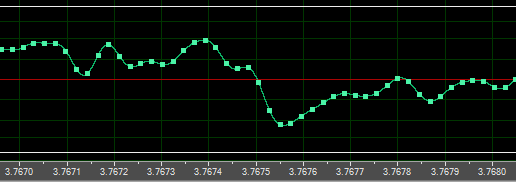
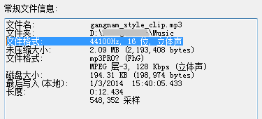

4-1. 声音的数字化常识
声音的数字化采样
看图说话：

声波是一条连续的波形曲线，要把声波存储到硬盘里，就要把这条曲线转换成数字。
这个声波转换成数字的过程，称为数字化采样，简称采样。
上图是一段声波的第3.767秒到第3.768秒之间的采样。
就在这0.001秒，即1毫秒之间，采集了40+个点，把每个点的Y轴的对应值记录下来，然后把这一串数值按顺序存储到硬盘里，就变成了WAV格式的声音文件。
采样率
采样率就是1秒之内采样了多少个点，单位是 Hz 。
一般网上下载到的MP3音乐，其采样率一般是 44100 Hz。也就是说，1秒钟采样了 44100 个点。
看图说话：

文件格式: 44100Hz, 16 位, 立体声
这一行信息的意思是，每秒钟采样了44100个点，每个点占16位，16位就是2字节。
所以每秒钟需要占用空间 44100x2=88200 字节，就是大约 88 KB。
而由于这是立体声的，占两个声道，所以两个声道加起来，每秒钟就是大约 176 KB。
所以，如果这个声音文件是WAV格式的，那么它每秒钟占用大约 176 KB，一分钟就是 176x60=10560 KB。
比特率
比特率表示每秒钟占用多少硬盘空间，单位是 Kbps ，把这个单位展开成英文就是“Kbit per second”，中文意思是“千比特每秒”。
例如，128 Kbps 意思是每秒占用空间 128 Kbit。
1个bit就是二进制数字中的1位，所以 8bit=1字节 。
所以，128 Kbit 就是 16 KB （128 / 8 = 16）。
所以，128 Kbps 就是 16 KB/s ，即每秒占 16 KB。
每秒 16 KB，那么每分钟就是 960 KB 。所以，如果是 128 Kbps 的 MP3，一首3分钟的歌曲大约占用不到 3 MB 左右。
如果使用不压缩的 WAV 格式，根据上文所述，那么“44100Hz, 16 位, 立体声”的WAV文件就是 176 KB/s ，即比特率就是 1408 Kbps。
比特率是用来衡量声音文件的压缩率的。比特率越小，文件越小，压缩率越高。
对于同一种声音文件格式，比特率越小代表音质越差。但要是文件格式不一样，比特率就不能用来对比音质了。